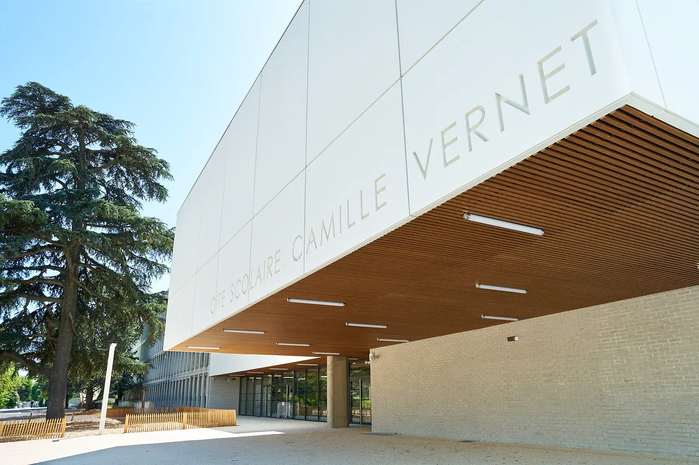

Mes études
Études secondaires
J'ai entrepris mes années de collège et lycée à la Cité scolaire Camille Vernet. J'ai réalisé un baccalauréat général en suivant les spécialités Mathématiques et Physiques Chimies.


Acquisitions
En plus d'avoir appris des notions avancées dans les spécialités de Mathématique et Physique Chimie, j'ai également suivi un cursus général incluant l'Anglais, l'Histoire, la Géographie, la Philosophie, les Sciences de la Vie et de la Terre, ...
Études supérieurs
Après l'obtention du baccalauréat, j'ai poursuivis mes études en BUT Informatique à l'IUT de Valence, et ce pendant 3 années.

Acquisitions
J'ai appris divers domaines de l'Informatique, que ce soit du backend avec bases de données, la créations de scripts bash shell, la prise en main de l'environnement Linux et tout ce que cela inclus, au frontend, avec l'apprentissage du HTML, CSS, Java/Typescript, PHP, en passant par le développment mobile Android, Kotlin et Jetpack Compose.
Mes expériences professionnelles
DPIA COLAERT
Durant ma formation de BUT Informatique, j'ai réalisé un state et une alternance en seconde et dernière année
Acquisitions
XXX